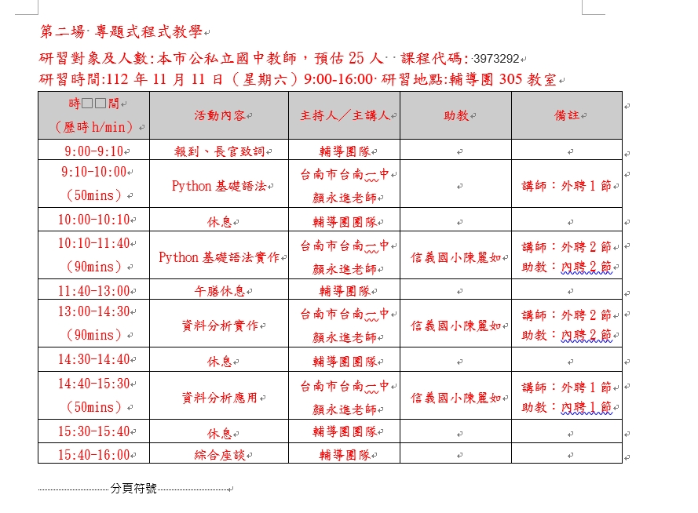

20231111專題式程式教學-Python
Table of Contents

1. 研習內容
- 國中科技領域召集人課程領導增能研習
- 研習對象及人數:本市公私立國中教師，預估25人
- 研習時間:112年11月11日（星期六）9:00-16:00
- 研習地點:輔導團305會議室

Figure 1: 20231111專題式程式教學-Python
2. Resource
4. Python 編寫環境與基礎語法
9:10-10:00 / 50 mins
4.1. 1. Colab編寫環境
- 20231111專題式程式教學1-Colab環境.ipynb
- 儲存格的類型
- Text Cell
- Code Cell: 輸出
- Code Cell: 輸入
4.2. 2. 變數、輪入、輸出、運算
- 20231111專題式程式教學2-Python的變數.ipynb
- 變數
- 輸入變數
- 進階的輸入
- 運算式與內建函數
- 外部函數
4.3. 3. 條件
- if
- if .. else
- if … elif .. else
- 縮排的重要性
4.4. 4. 自訂函數
4.5. 5. 假裝很專業的UI設計
4.6. 番外篇: 什麼是ipynb?
4.7. 6. 複雜的資料
4.8. 7. 第三方套件: Pandas
4.9. 8. 第三方套件: MatPlotLib
4.10. 9. 第三方套件: LINE Notification
5. 休息
10:00-10:10 / 10 mins
7. 午膳休息
11:40-13:00 / 80 mins
8. 資料分析實作1
13:00-14:30 / 90 mins
9. 休息
14:30-14:40 / 10 mins
10. 資料分析應用2
14:40-15:30 / 50 mins
10.1. 小組實作
- 團購輸入
- 統計
- 圖表
- LINE通知
11. 休息
15:30-15:40 / 10 mins
12. 綜合座談
15:40-16:00 / 20 mins